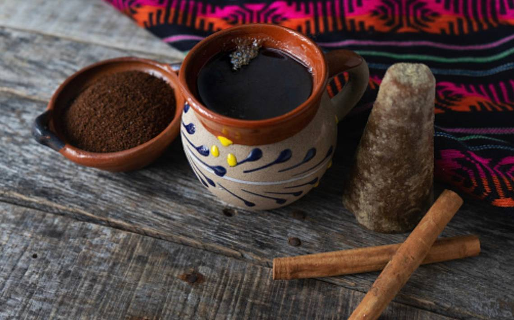

Cáfe de olla, la tradición Mexicana
Sabias que.....
El café que es producido en nuestro país, en regiones como Chiapas, Oaxaca y Veracruz, es reconocido mundialmente debido a sus características de aroma y sabor, otorgadas gracias a la geografía de las diversas zonas en que es cultivado. Aunque se desconoce la fecha exacta de la llegada del café a México, los historiadores coinciden en que llegó por Veracruz, proveniente desde Cuba a finales de 1700. Desde ese momento este cultivo comenzó a distribuirse alrededor del territorio mexicano.
Y como surgío el Cáfe de olla ?
La teoría más aceptada es que nació durante la Revolución Mexicana. Cuando las Adelitas (revolucionaras mexicanas), preparaban esta bebida para dar algo a caliente a los soldados, ellas agregaban las especias y el piloncillo con el fin de hacerlo más agradable al paladar. Su nombre lo debe a que la receta tradicional está hecha en pequeños jarros de barro que también influyen en el sabor final de la bebida. Dependiendo de la región del país puede tener clavo y piel de naranja o de limón. Una variante de su preparación sucede en Veracruz, donde colocan todos los ingredientes en un pequeño paño (café, piloncillo y canela), para después sumergirlo en agua hirviendo.
Y una breve receta de como preparar Cáfe de olla
Ingredientes
- 6 Tazas de agua
- 1 Barra de piloncillo
- 3 Clavos de olor
- 2 Rajas de canela
- 4 cucharadas de cafe en polvo
Preparacion
- En una olla de barro poner el agua, piloncillo, clavos y canela
- Una vez que hierva , agregar el cafe
- Esperar a que se disuelva el cafe y el piloncillo por completo
- Servir y disfrutar(De preferencia servir en tazas de barro